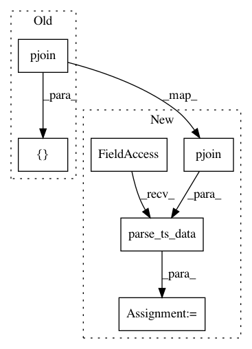

369cedea3c6ac84f03a60eed5d6a8cd292c8d8ba,mltsp/tests/test_custom_feats.py,,test_copy_data_to_tmp_dir,#,152
Before Change
feats_known_dict_list = [{"feat1": 0.215, "feat2": 0.311},
{"feat1": 1, "feat2": 2}]
ts_datafile_paths = [pjoin(DATA_PATH, "dotastro_215153.dat")] * 2
cft.add_tsdata_to_feats_known_dict(feats_known_dict_list,
ts_datafile_paths, None)
After Change
"features_already_known.pkl")
feats_known_dict = {"feat1": 0.215, "feat2": 0.311}
ts_datafile = pjoin(DATA_PATH, "dotastro_215153.dat")
t, m, e = ctt.parse_ts_data(ts_datafile)
feats_known_dict["t"] = t
feats_known_dict["m"] = m
feats_known_dict["e"] = e
In pattern: SUPERPATTERN
Frequency: 3
Non-data size: 6
Instances
Project Name: cesium-ml/cesium
Commit Name: 369cedea3c6ac84f03a60eed5d6a8cd292c8d8ba
Time: 2015-09-30
Author: brettnaul@gmail.com
File Name: mltsp/tests/test_custom_feats.py
Class Name:
Method Name: test_copy_data_to_tmp_dir
Project Name: cesium-ml/cesium
Commit Name: 369cedea3c6ac84f03a60eed5d6a8cd292c8d8ba
Time: 2015-09-30
Author: brettnaul@gmail.com
File Name: mltsp/tests/test_custom_feats.py
Class Name:
Method Name: test_docker_extract_features
Project Name: cesium-ml/cesium
Commit Name: 369cedea3c6ac84f03a60eed5d6a8cd292c8d8ba
Time: 2015-09-30
Author: brettnaul@gmail.com
File Name: mltsp/tests/test_custom_feats.py
Class Name:
Method Name: test_extract_feats_in_docker_container